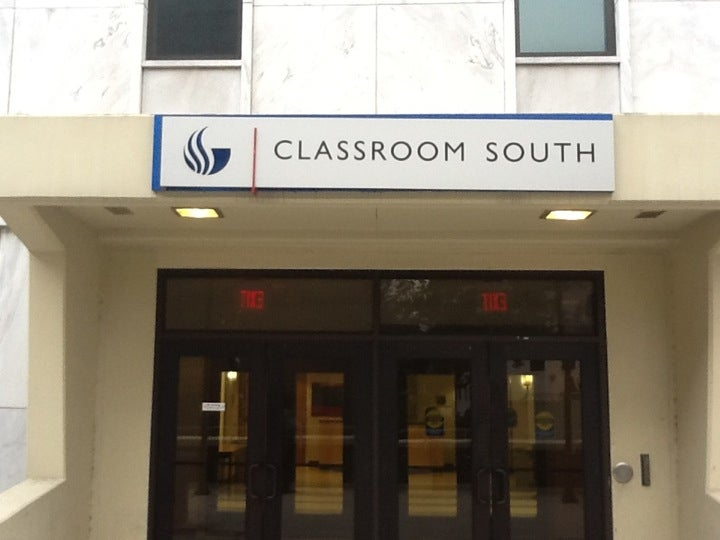
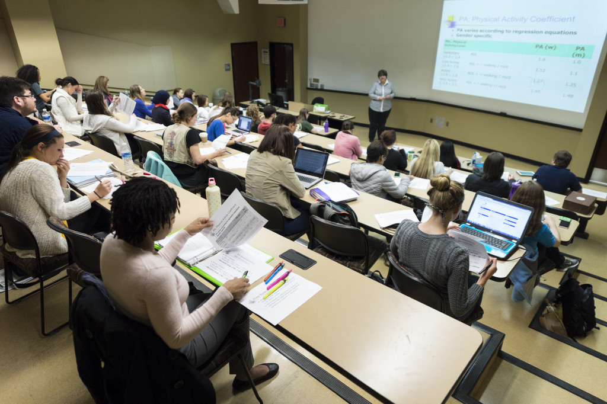

33 Gilmer St SE
Atlanta, GA 30303
(404) 413-2000
Atlanta, GA 30303
(404) 413-2000
At the corner of Decatur Street and Central Avenue a new a five story, 35,000 sf project that will connect to both the original building built in 1968 and a first phase addition that was completed in 2010.

